Next: Heteroclinic orbits and further Up: Examples Previous: CL_MATCONT: the MLFast example Contents
Starting from a general point 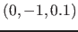 and setting 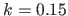 and 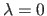, we find by time integration a stable equilibrium at 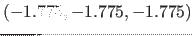.
By equilibrium continuation with free, we find two limit points (LP), at 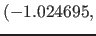 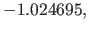 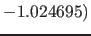 for 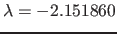 with normal form coefficient 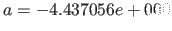 and at 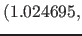 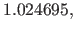 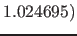 for 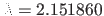 with normal form coefficient 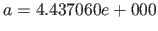 (note the reflection).
By continuation of the limit points with 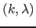 free, MATCONT detects a cusp point CP at 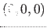 for 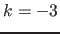 and . Also detected are two Zero-Hopf points ZH for 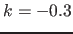 at 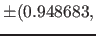 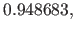 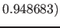 and 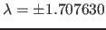, but these are in fact Neutral Saddles. Further, two Bogdanov-Takens points BT are found for 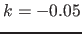 at 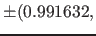 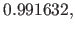 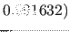 and 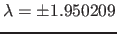. The normal form coefficients are 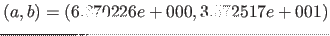.
A bifurcation diagram of (97) is shown in Figure 32.
|
We will now start an orbit homoclinic to saddle from a limit cycle with large period. First select the BT point at 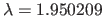, and then compute a curve of Hopf points H passing through it (Type 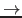 Curve Hopf), along which one encounters a Generalized Hopf bifurcation GH where 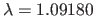 and 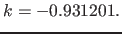 Stop the continuation before the GH point, e.g. for 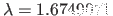 where 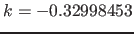 and 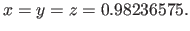 From this Hopf point start the continuation of limit cycles (this is the default Curve type) with 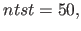 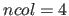 and amplitude equal to 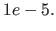
We then obtain limit cycles for slowly decreasing values of 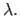 At 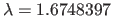 the parameter does not decrease further (at least as seen for this number of digits) but the period increases at each step by approximately the amount of MAXSTEPSIZE.
Stop the continuation when the period reaches 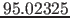 (or a nearby value).
Now select the last LC of this curve (Select Initial point), and declare it to be a homoclinic orbit by clicking on Type Curve Homoclinic to Saddle.
For a homoclinic continuation you need 2 free parameters (here 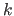 and ) and 1 or 2 homoclinic parameters. Pick and  . With these settings, you can start the homoclinic curve (Compute Backward).
See Figure 33.
For speed purposes, you can increase some Tolerances in the Continuer window, or set Adapt to 0.
. With these settings, you can start the homoclinic curve (Compute Backward).
See Figure 33.
For speed purposes, you can increase some Tolerances in the Continuer window, or set Adapt to 0.
|
One can also monitor the eigenvalues of the equilibrium during continuation, by displaying them in the Numerical window. This is a useful feature, because it gives indications on what further bifurcations might be expected. For example, a non-central homoclinic-to-saddle-node reveals itself by the fact that one eigenvalue approaches zero.